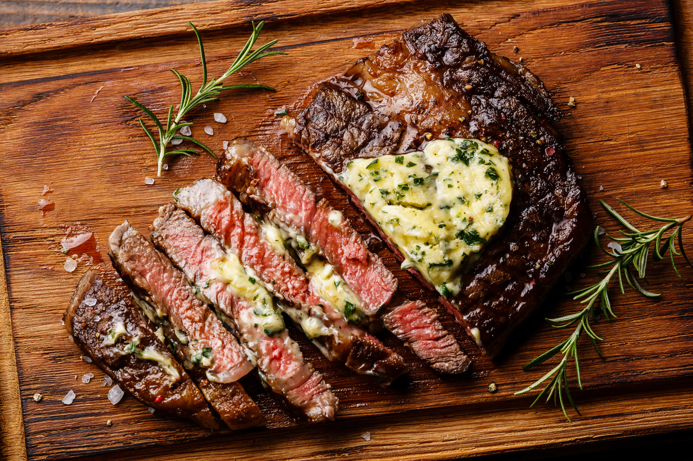

Steak

What is a smoked steak?
This is steak. Steak is a wonderful, meaty food that usually comes from a cow.
There are many ways to cook a steak, but for this recipe, we will be smoking it
and reverse searing it.
Ingredients
- 1 New York Strip Steak
- Salt
- Freshly Ground Black Pepper
- Onion Powder
- Garlic Powder
Tools Needed
- Smoker
- Grill
- Cutting Board
- Meat Temperature Probe
- Tongs
- Plate
Steps
- Take your steak out of the package, and pat it dry completely with a paper towel.
- Lay your steak out on a cutting board.
- Season your steak to your liking with the salt, pepper, onion powder, and garlic powder.
- Stick the temperature probe in the steak.
- Light up your smoker and set the temperature to 250F or 275F.
- Once your smoker is up to temperature, lay your steak in the smoker and smoke the steak until
it hits an internal temperature of 130F.
- Once an internal temperature of 130F is reached for the steak, remove it from the smoker for 3-5 minutes
and place it on a plate.
- In the waiting time, light up your grill and get it extremely hot.
- Once that time has passed, lay your steak on the grill using tongs.
- After 3 minutes, flip the steak using your tongs.
- Leave the steak on the uncharred side for 3 minutes.
- Once that time has passed, rest your steak for another 3-5 minutes on a plate off the grill.
- After those 3-5 minutes, cut into your steak and enjoy!